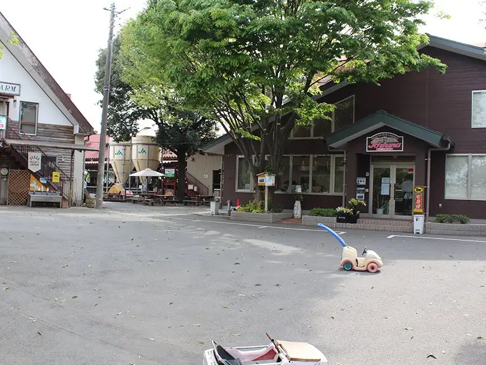
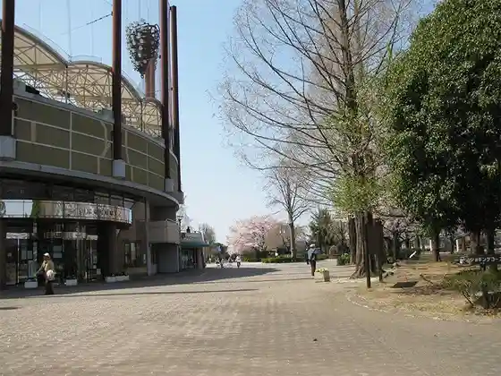
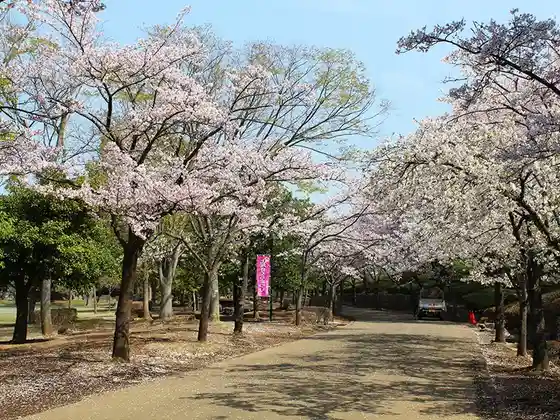
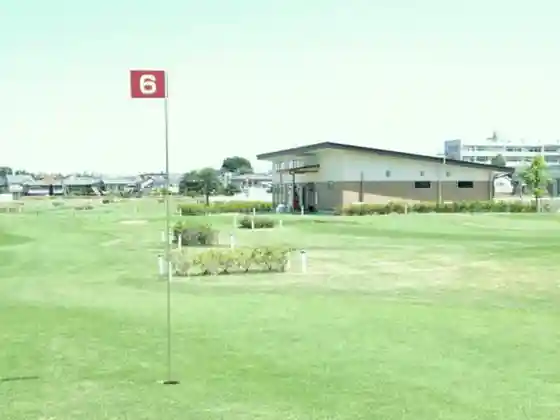

Japan / Saitama / Ageo
Ageo · Saitama
Ageo
Highlighted on the Saitama map.

Ageo City Hall
Enomoto Ranch
Ageo, Saitama · 048-726-1306 · Official / source link
Kamitaira Park
Ageo, Saitama · 048-776-8986 · Official / source link

Ageo Maruyama Park
Ageo, Saitama · 048-781-0163 · Official / source link

Tozaki Park
Ageo, Saitama · 048-783-0577 · Official / source link

Ageo Sports Park
Ageo, Saitama · 048-771-4245 · Official / source link
Henjo In
Ageo, Saitama · 048-771-0648 · Official / source link
Yae Shrine
Ageo, Saitama · 048-725-2069 · Official / source link
Hikawa Kuwa Shrine
Ageo, Saitama · 048-771-5847 · Official / source link
Nearby in Saitama: ← Yoshimi · Asaka →
Other towns: Asaka · Chichibu · Fujimi · Fujimino · Fukaya · Gyoda · Hanno · Hanyu · Hasuda · Hatoyama · Hidaka · Higashichichibu · Higashimatsuyama · Honjo · Inamachi · Iruma · Kamikawa · Kamisato · Kasukabe · Kawagoe · Kawaguchi · Kawajima · Kazo · Kitamoto · Konosu · Koshigaya · Kuki · Kumagaya · Matsubushi · Minano · Misato-saitama · Miyashiro · Miyoshimachi · Moroyama · Nagatoro · Namegawa · Niiza · Ogano · Ogawamachi · Ogose · Okegawa · Ranzan · Saitama · Saitama-misato · Sakado · Satte · Sayama · Shiki · Shiraoka · Soka · Sugito · Toda · Tokigawa · Tokorozawa · Tsurugashima · Wako · Warabi · Yashio · Yokoze · Yorii · Yoshikawa · Yoshimi
All towns in Saitama · Back to all prefectures